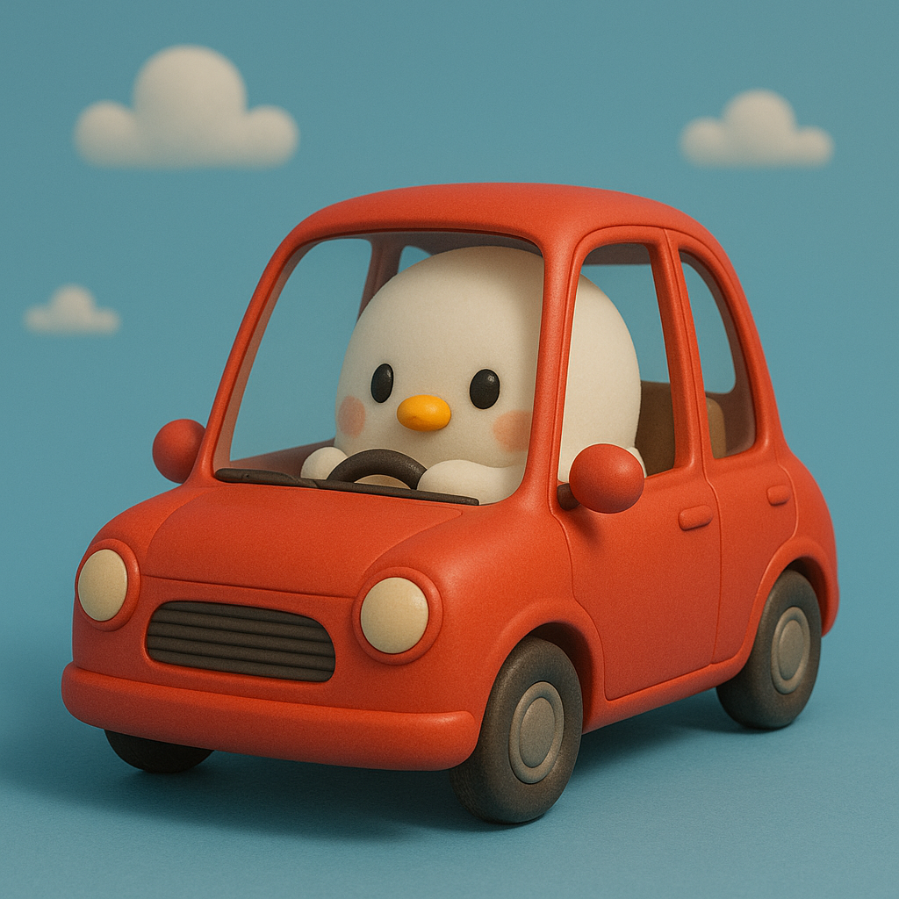

유쾌한 한방! 당신의 한표! 정치방망이!
통합검색
통합검색
제목+내용
제목
작성자
작성일
-
무인도에 단둘이 남는다면?이재명 / 김문수 / 이준석 / 한동훈 / 한덕수 / 조국 / 이낙연투표기간: 2025.06.01 ~ 2025.10.15조회수 512회 투표수 132명 댓글수 23개
-
고3 수험생인데 과외 선생님 누구?이재명 / 김문수 / 이준석 / 한동훈 / 한덕수 / 조국 / 이낙연투표기간: 2025.05.28 ~ 2025.06.10조회수 512회 투표수 98명 댓글수 11개
-
집까지 한시간 거리! 차 한 대가 섰다! 누구 차 탈래?이재명 / 김문수 / 이준석 / 한동훈 / 한덕수 / 조국 / 이낙연투표기간: 2025.06.02 ~ 2025.06.08조회수 512회 투표수 77명 댓글수 6개
-
신뢰하는 대선 후보는?이재명 / 김문수 / 이준석 / 한동훈 / 한덕수 / 조국 / 이낙연투표기간: 2025.05.20 ~ 2025.06.20조회수 512회 투표수 210명 댓글수 14개
-
원룸 계약 조건 똑같다. 누구랑 계약할래?이재명 / 김문수 / 이준석 / 한동훈 / 한덕수 / 조국 / 이낙연투표기간: 2025.06.03 ~ 2025.06.12조회수 512회 투표수 66명 댓글수 7개
-
기후 변화에 가장 적극적인 후보는?이재명 / 김문수 / 이준석 / 한동훈 / 한덕수 / 조국 / 이낙연투표기간: 2025.06.04 ~ 2025.06.18조회수 512회 투표수 42명 댓글수 3개
-
청년 지원 정책 만족도는?이재명 / 김문수 / 이준석 / 한동훈 / 한덕수 / 조국 / 이낙연투표기간: 2025.06.05 ~ 2025.06.19조회수 512회 투표수 81명 댓글수 9개
-
교육 정책 개혁 방향은?이재명 / 김문수 / 이준석 / 한동훈 / 한덕수 / 조국 / 이낙연투표기간: 2025.06.06 ~ 2025.06.20조회수 312회 투표수 55명 댓글수 12개
-
의료보험 확대 찬반은?이재명 / 김문수 / 이준석 / 한동훈 / 한덕수 / 조국 / 이낙연투표기간: 2025.06.07 ~ 2025.06.21조회수 428회 투표수 89명 댓글수 15개
-
부동산 정책 만족도는?이재명 / 김문수 / 이준석 / 한동훈 / 한덕수 / 조국 / 이낙연투표기간: 2025.06.08 ~ 2025.06.22조회수 671회 투표수 143명 댓글수 28개